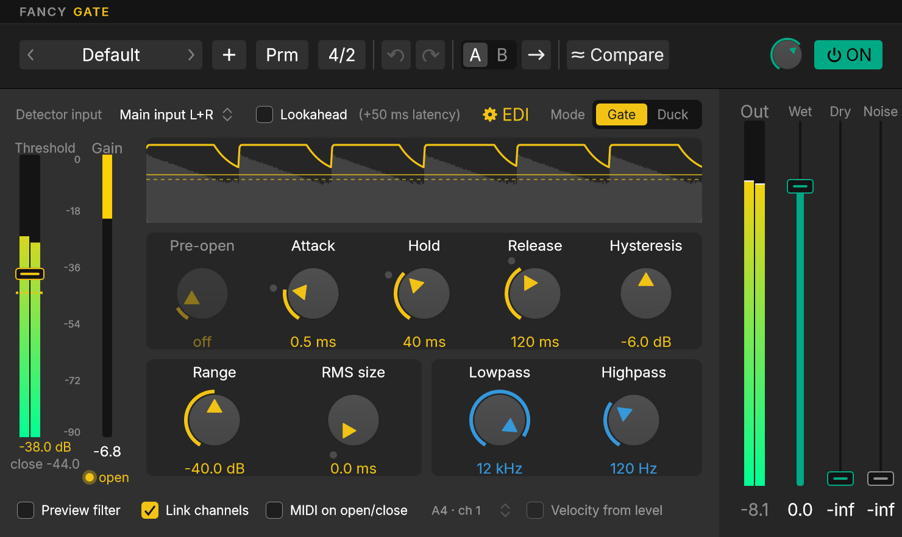

docs/gate.md, Phase 4 Wave 2: tempo-synced trigger, Decision 3 A. New things in dashed yellow, on the plugin's real screenshot (1x coordinates).
1 · Host sync in the Detector input menu
Host sync is appended after Side, in its own HOST SYNC section. The EDIT link is drawn at its fixed width: today's build clips it to "EDI", fixed in the same push.

⚙ EDIT
Host sync
Nothing else on the main window moves. The Lowpass and Highpass cards stay live but don't touch the pulse; the "No sidechain signal" notice never shows for Host sync.
2 · The EDIT drawer with Host sync chosen
Under Ratio and De-bleed, in place of the De-bleed note (De-bleed works on audio and never touches the pulse): a HOST SYNC group with Rate (1/1 to 1/16, each also dotted and triplet; 1/8 by default) and Shape (5 to 100 % of the step, 50 % by default), a small knob. Each step opens the gate for Shape of the step whatever Threshold is; Attack, Hold, Release, Range and Ratio shape each opening.
⚙ EDIT
EDIT
Done
Note-on opens, note-off closes. The detector is ignored.
LearnListens for 3 s and sets Threshold
HOST SYNC
Rate
1/8
With another Detector input the group is hidden and the De-bleed note is back, as now. Without host tempo the caption reads "NO HOST TEMPO: 120 BPM". With MIDI trigger ticked, MIDI wins and the group dims (Decision 2 A).